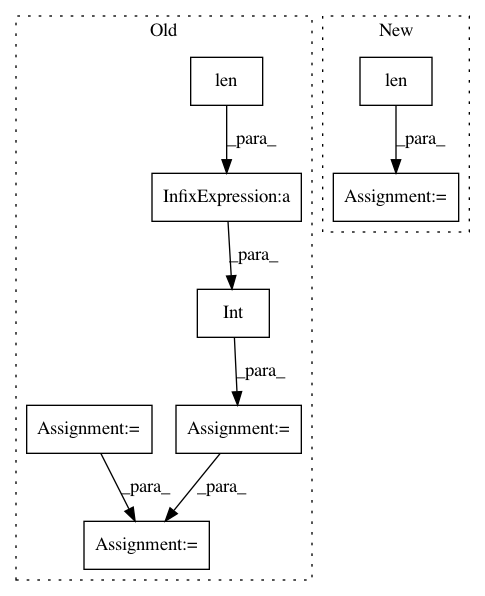

f5746a82b4f1c440639d05be4b0de93a104294c5,pliers/extractors/audio.py,RMSEExtractor,_extract,#RMSEExtractor#Any#,169
Before Change
pad_mode=self.pad_mode)[0]
fl = self.frame_length
hl = self.hop_length
fps = float(stim.sampling_rate)
n_frames = 1 + int((len(stim.data) - fl) / hl)
n_frames = n_frames + (fl / hl) if self.center else n_frames
onsets = np.arange(n_frames) * hl / fps
durations = [hl / fps] * n_frames
return ExtractorResult(rmse, stim, self,
features=["RMSE"],
onsets=onsets,
After Change
hop_length=self.hop_length,
center=self.center,
pad_mode=self.pad_mode)[0]
n_frames = len(rmse)
onsets = librosa.frames_to_time(range(n_frames),
sr=stim.sampling_rate,
hop_length=self.hop_length)
durations = [self.hop_length / float(stim.sampling_rate)] * n_frames
return ExtractorResult(rmse, stim, self,
features=["RMSE"],
onsets=onsets,
In pattern: SUPERPATTERN
Frequency: 3
Non-data size: 8
Instances
Project Name: tyarkoni/pliers
Commit Name: f5746a82b4f1c440639d05be4b0de93a104294c5
Time: 2017-09-07
Author: quinten.mcnamara@gmail.com
File Name: pliers/extractors/audio.py
Class Name: RMSEExtractor
Method Name: _extract
Project Name: tensorflow/datasets
Commit Name: a9338d1372a82a55901d1aca86d646ac58a85a04
Time: 2021-01-25
Author: ratin.kumar.2k@gmail.com
File Name: tensorflow_datasets/core/features/image_feature.py
Class Name:
Method Name: _apply_colormap
Project Name: ncullen93/torchsample
Commit Name: 70b15bde1d8a1b29d24f23bac1a28a63be0fb4d2
Time: 2017-04-20
Author: ncullen@modv-vlan533.0018.apn.wlan.med.upenn.edu
File Name: torchsample/modules/super_module.py
Class Name: SuperModule
Method Name: evaluate_loader